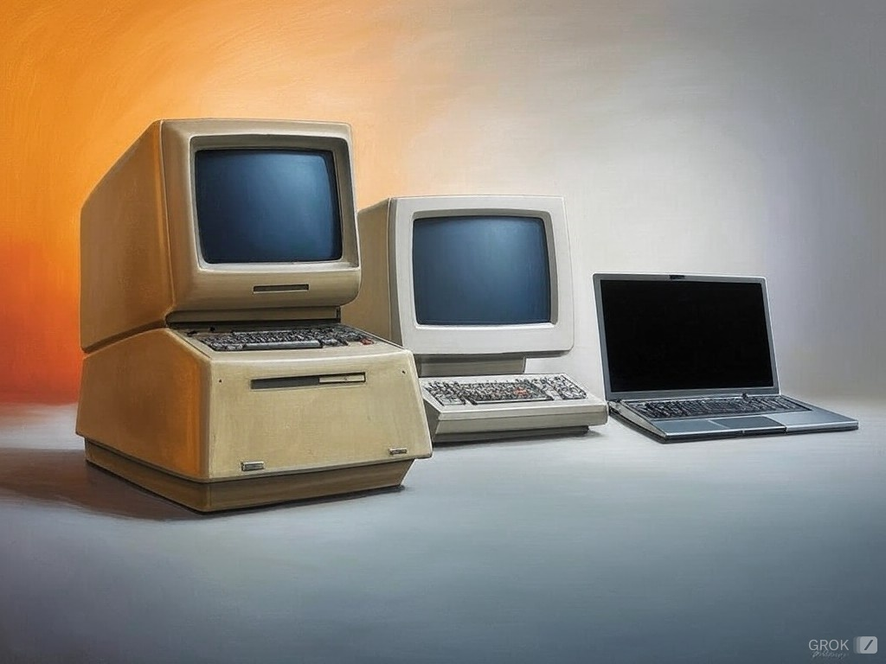

İşletim Sistemi
İşletim sistemi, bir bilgisayar programıdır. Temel görevi bilgisayar parçaları arasındaki ilişkiyi düzenlemek aralarında bilgi alışverişi yapmasını sağlamaktır. Yani bir işletim sistemi; temel sistem işlemlerinden, uygulama programlarını çalıştırmaktan ve bilgisayar donanımının doğrudan denetimi ve yönetiminden sorumlu olan bir sistem yazılımıdır. İşletim sistemleri, bir donanımı belli bir amaç doğrultusunda programlayabilme nitelikleriyle değerlendirilirler. Bu açıdan bir işletim sistemi sadece bilgisayar, mobil araçlar, video oyun konsolları, cep telefonları ve web sunucularında değil; arabalarda, televizyonlarda, ev sinema sistemlerinde, beyaz eşyalarda ve kol saatlerinin içinde de yüklü olabilir.
Tarihsel Gelişim

Tarih içerisinde dört temel işletim sistemi neslinden söz edilir. Bunlar:
- I. Nesil İşletim Sistemi (1940-1954) – Vakum Tüpleri
- II. Nesil İşletim Sistemi (1955-1964) – Transistörler ve Yığın İşlem (Batch Processing)
- III. Nesil İşletim Sistemi (1965-1979) – Entegre Devreler ve Çoklu Programlama
- IV. Nesil İşletim Sistemi (1980 - – ) – Kişisel Bilgisayarlar
İşletim Sistemi Mantıksal Yapısı
İşletim sisteminin mantıksal yapısını açıklamak için dört temel unsurdan bahsedebiliriz:
- Aygıt Yönetimi (Device Management)
- Bellek Yönetimi (Memory Management)
- Dosya Yönetimi (File Management)
- İşlem Yönetimi (Process Management)
Açık Kaynak Kodlu İşletim Sistemleri
Açık kaynak kodlu yazılımlar kullanıcıya yazılım kodlarını değiştirme özgürlüğünü sağlar. Topluluktaki uzmanlar işletim sistemindeki güvenlik açıklarını kapatırlar. Bundan dolayı açık kaynak kodlu yazılımlar daha güvenilir, hızlı ve sağlamdır. Yazılımlar uyarlanabilir, sağlam, hızlı ve güvenlidir. Açık kaynak kodlu işletim sistemlerine örnek olarak Ubuntu, Linux, Pardus, Debian gösterilebilir.
Açık Kaynak Kodlu Yazılım Kullanma Nedenleri:
- Özgürlük ve Esneklik: İşletim sistemindeki kaynak kodlara erişebilir ve dilediğiniz gibi özelleştirebilirsiniz.
- Düşük Maliyet: Birçok açık kaynak kodlu işletim sistemi ücretsizdir, herhangi bir lisansa para vermeden kullanabilirsiniz.
- Topluluk Desteği: Açık kaynaklı yazılımlar genellikle büyük bir topluluk tarafından yapılır, bu sayede daha geniş bir destek ağına sahip olursunuz.
- Güvenlik: Kaynak kodunun herkese açık olması, güvenlik açıklarının hızlıca tespit edilmesine ve düzeltilmesine olanak tanır.
Linux
Linux, en popüler açık kaynak kodlu işletim sistemidir ve Linus Torvalds tarafından 1991 yılında geliştirilmiştir. Linux, sunuculardan masaüstü bilgisayarlara kadar birçok platformda çalışır. Kullanıcılar farklı dağıtımlar arasında seçim yapabilir (örneğin, Ubuntu, Fedora, Debian, Arch Linux vb.). Linux, hem sunucularda, süper bilgisayarlardan mobil cihazlara kadar geniş bir ürün yelpazesine sahiptir.
BSD
BSD tabanlı işletim sistemleri, özellikle güvenlik ve ağ özellikleri ile tanınır. Stabildir ve güçlü ağ ve güvenlik özelliklerini kapsar. Ağ sunucularında, güvenlik odaklı sistemlerde, depolama sunucuları ve veritabanı sunucuları gibi yüksek performans gerektiren ortamlarda kullanılır.
Haiku
Haiku, açık kaynaklı, modern ve hafif bir işletim sistemidir. Basit bir arayüze sahiptir ve özellikle medya işleme ve multimedya uygulamaları için optimize edilmiştir. Kişisel bilgisayarlar ve medya odaklı uygulamalar kullanım alanlarındandır.
ReactOS
ReactOS, Windows uyumlu bir açık kaynak işletim sistemidir. Windows uygulamalarını ve sürücülerini çalıştırabilmeyi amaçlayan bir projedir. Bu bağlamda Windows yazılımı kullanmak isteyen kullanıcıların tercihidir.
Kapalı Kaynak Kodlu İşletim Sistemleri
Bilişim uzmanları tarafından kaynak kodu paylaşılmayan işletim sistemleridir. Ücretli olarak bilgisayarınıza yüklü olarak gelir ya da kullanıcılar işletim sistemlerinin kendi web sitelerinden ücret bedelini ödeyerek erişebilirler. Herhangi bir kaynak koduna ulaşamadığınız için yazılım üzerinde üreticinin verdiği izinler dışında değişiklik yapamazsınız.
Kapalı Kaynak Kodlu İşletim Sistemi Tercih Etme Nedenleri:
- Kullanıcı Dostu Tasarım ve Destek: Bu tür genellikle kapsamlı ve profesyonel destek sunar.
- Yazılım Uyumluluğu ve Ekosistem: Kapalı kaynaklı işletim sistemleri, genellikle daha geniş bir yazılım ve donanım uyumluluğuna sahiptir.
- Güvenlik ve Stabilite: Güvenlik açıklarını hızlı bir şekilde kapatmak için otomatik güncellemeler sunar.
- Kurumsal Çözümler ve Entegrasyon: Windows Server ve macOS Enterprise gibi platformlar büyük ölçekli işletmelerin gereksinimlerini karşılamak için özellikler sunar.
- Uzman Desteği ve Eğitim: Kapalı kaynak kodlu sistemler profesyonel destek hizmetleri ve eğitim programları sunar.
- Daha Az Teknik Bilgi Gereksinimi: Kapalı kaynaklı işletim sistemleri genellikle daha kullanıcı dostudur ve daha az teknik bilgi gerektirir.
- Ticari Yazılım Desteği ve Lisanslar: Özel yazılım veya uygulamalar, belirli bir işletim sistemi için geliştirilmiş olabilir.
Windows
İlk kez 1985 yılında Windows 1.0 olarak piyasaya sürülmüş ve o zamandan beri birçok sürümüyle ev kullanıcıları, iş dünyası, eğitim kurumları ve daha pek çok alanda yaygın olarak kullanılmıştır. Windows, genellikle kullanıcı dostu arayüzü, geniş yazılım desteği, donanım uyumluluğu ve ticari özellikleri ile bilinir.
Windows'un Popüler Özellikleri:
- Kullanıcı Dostu Arayüz: Windows, genellikle kullanıcı dostu bir arayüze sahip olmasıyla bilinir.
- Donanım ve Yazılım Uyumluluğu: Microsoft ve üçüncü taraf geliştiriciler, Windows için uygulamalar ve oyunlar geliştirir.
- Güvenlik Özellikleri:
- Windows Defender: Dahili antivirüs ve zararlı yazılım engelleyici.
- Bitlocker: Veri şifreleme aracı, disk şifrelemesi sağlar.
- Windows Hello: Yüz tanıma veya parmak izi ile kimlik doğrulama.
- Firewall ve Windows Update: Güvenlik yamaları ve güncellemeleri otomatik olarak indirir.
- Sanal Masaüstü: Bu özellik sayesinde birden fazla masaüstü oluşturulabilir.
- Farklı Sürüm Çeşitleri: Windows, farklı kullanım ihtiyaçlarına göre sürümler sunar (Windows Home, Pro, Enterprise, Education vb.).
macOS
Apple tarafından geliştirilen ve Macintosh bilgisayarlarında (Mac) çalışan işletim sistemidir. İlk olarak 1984 yılında piyasaya sürülen macOS, 2001 yılında Mac OS X olarak yeniden yapılandırıldı ve 2016'dan itibaren macOS adıyla anılmaya başlandı. macOS, özellikle sade, şık arayüzü, güvenliği, uyumluluğu ve stabilitesi ile tanınır.
macOS'un Avantajları:
- Kullanıcı Dostu ve Şık Tasarım: macOS, görsel olarak çekici ve sezgisel bir tasarıma sahiptir.
- Stabilite ve Güvenlik: Apple, macOS’un güvenliğini ve stabilitesini en üst düzeyde tutar.
- Apple Ekosistemi ile Entegrasyon: iPhone, iPad, Apple Watch ve diğer Apple cihazlarıyla mükemmel bir entegrasyon sağlar.
- Yüksek Performans ve Verimlilik: Apple'ın özel donanımı ile optimize edilen macOS, profesyonel yazılımlar ve grafik yoğun uygulamalar için performans avantajı sağlar.
- Yazılım Güncellemeleri: Apple, düzenli ve güvenli yazılım güncellemeleri sunar.
- Yüksek Kaliteli Yerleşik Yazılımlar: Fotoğraflar, Safari, Mail, iWork gibi güçlü yerleşik uygulamalar sunar.